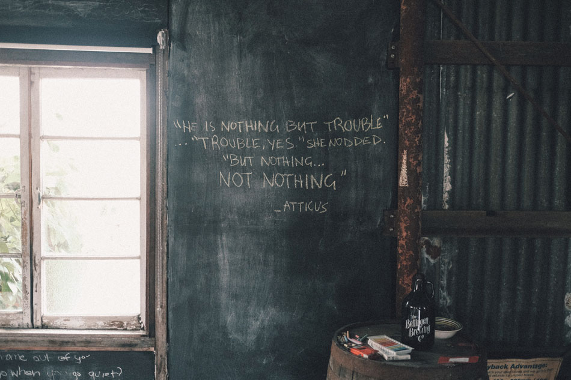
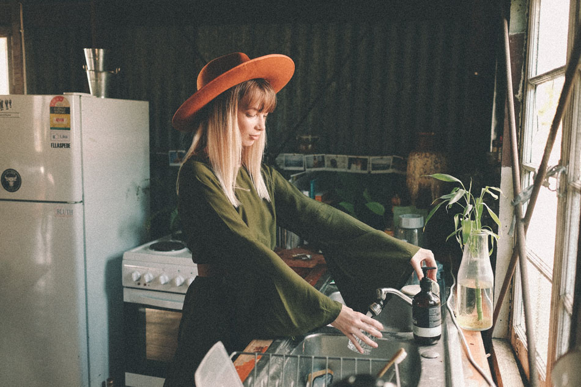
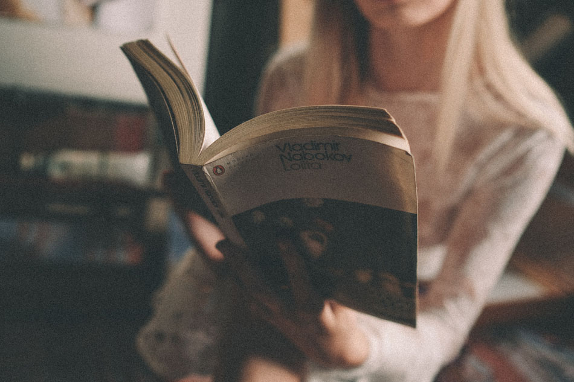
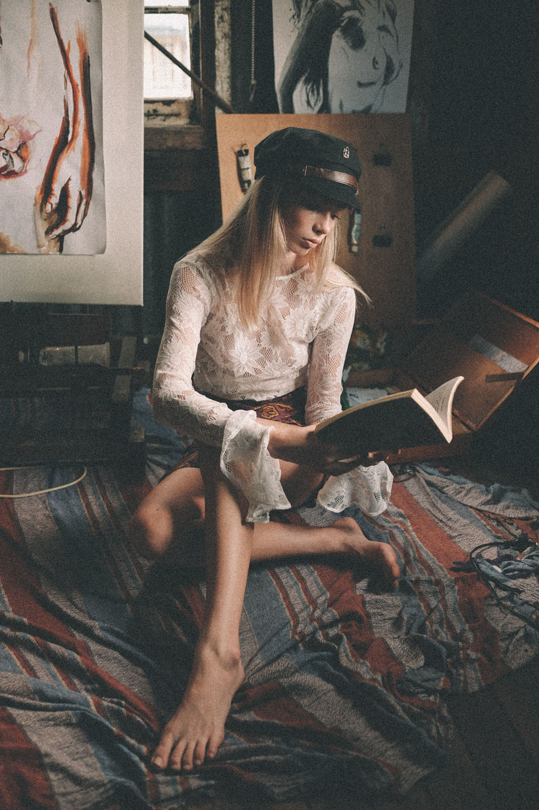
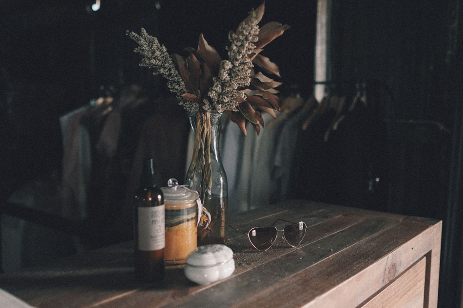
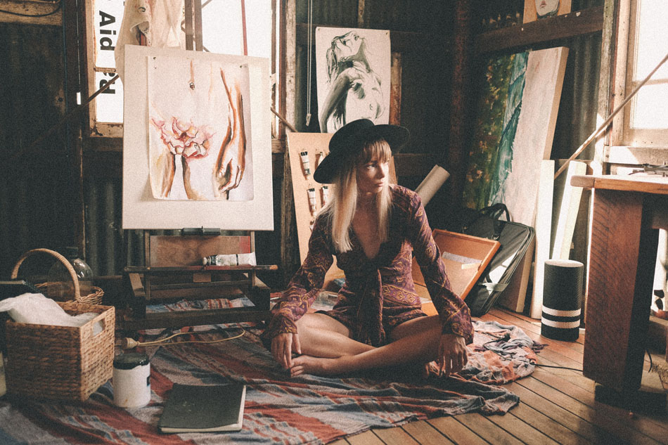
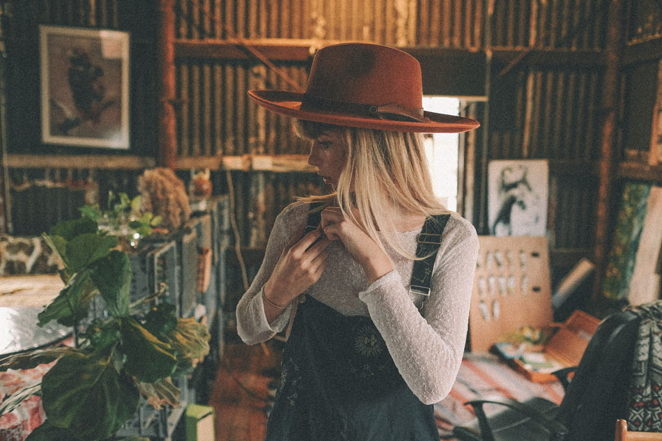
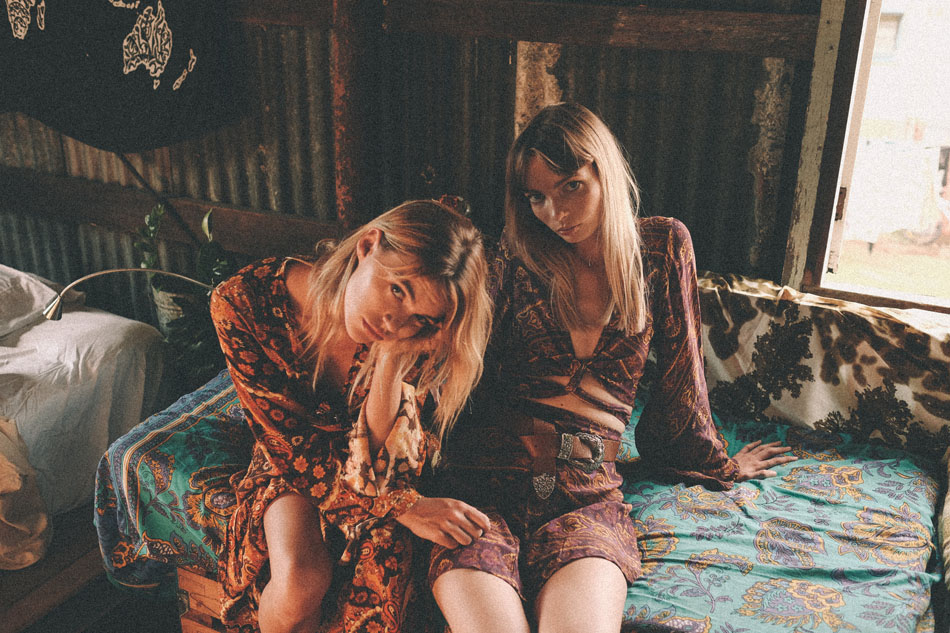
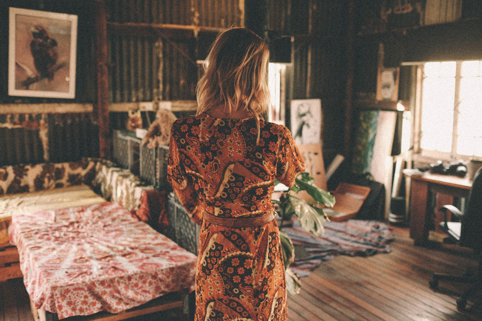
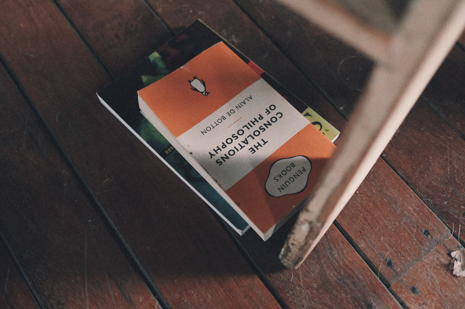

Photographer Bob Sala spent two weeks in Australia on a Road Trip organized by Brisbane based “Racquet Studio” and came back with a bunch of amazing dreamy and storytelling shots.
We drove along the East Coast and one of the first days I had the chance to spent some time with Montana and her friend Brooke in Montana’s crazy hippie shack in Brisbane.
It was a pretty hot day, we were all sweaty in the end and enjoyed a little summer rain in front of the window. The apartement was full of books, Montana’s paintings and stacks of her dresses.
The afternoon there was definetely one of the most memorable things in Australia.” Montana and Brooke are wearing dresses by Nine Lives Bazaar and hats by Fallen Broken Street.
Styling done by Izi Angus and hair &make-up by Madeleine Goldsmith.










Photographer: Bob Sala @bob_sala
Models: Montana @montanalower &Brooke @brooke.madsen
Produced by: Racquet Studio @racquetstudio
Dresses: Nine Lives Bazaar @ninelivesbazaar
Hats: Fallen Broken Street @fallenbrokenstreet
Styling: Izi Angus @iziangus
Hair &MakeUp:Madeleine Goldsmith @madeleinegoldsm